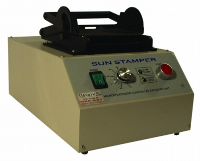

Флэш система MS-1100 производства японской формы Sun Stamper

Флэш установка MS-1100
Материал, из которого изготавливают печати представляет собой термочувствительную микропористую резину (губку) с размером пор от 5 до 10мкм, т. е. материал имеет разрешающую способность порядка 4000 dpi (разрешающая способность оригинал-макета это уже другой вопрос). В повседневных условиях можно изготавливать оригинал-макеты на обыкновенных лазерных принтерах с разрешением 600, 1200 dpi или более высоким на фотовыводных устройствах.
Технология изготовления нерельефных красконаполненных печатей основана на выборочном спекании пор микропористой термочувствительной резины под воздействием световой энергии лампы-вспышки, преобразованной в тепловую 70-75°С. Этот процесс основан на физическом свойстве «черного тела» поглощать световую и выделять тепловую энергию (нагреваться). Возможны два варианта преобразования световой энергии в тепловую: используя специальную углеродную пленку или предварительно обработав резину спирто-углеродным составом. После обработки поры на печатных элементах печатей остаются открытыми и пропускают чернила. Для создания на резине печатающей поверхности, как правило, используются пленки с позитивным изображением, полученным на лазерном принтере. Возможно использование негативных или позитивных пленок с фотовыводных устройств. При использовании негативов углеродная пленка не требуется. Углеродный слой пленки (эмульсия негатива или поверхностный слой резины, предварительно обработанной спирто-углеродным составом) нагревается за счет поглощения света лампы-вспышки и при этом происходит выборочное спекание пор. Находящиеся под изображением поры (печатающие элементы печати) остаются открытыми, пробельные элементы, после спекания пор резины, чернила не пропускают.
Чернила, после изготовления печати, заливаются через специальное отверстие (штуцер) в оснастку с припаянной или приклеенной резиной (в традиционных японских оснастках) или наносятся на специальный фильтровальный материал (технология «сэндвич», оснастка американской фирмы M&R) и в течение 30-120 минут насыщают печать. Время полного заполнения пор можно значительно сократить, нагрев чернила до 30-35°С или поместив оснастку в теплую камеру. После насыщения чернилами печати или штампа при соприкосновении с бумагой выход чернил происходит через открытые поры. Количество чернил необходимое для заполнения определяется из таблицы (для обыкновенной круглой печати диаметром 40-45 мм – 2-3 грамма).
Чернила, используемые в этой технологии, идеально сочетаются с микропористым материалом, который впитывает их в себя как губка. Чернила обладают устойчивостью к смазыванию и стиранию спиртовым и водным растворами, впитывание (высыхание) чернил на поверхности бумаги происходит не более чем за 6 секунд без остаточного отмарывания. Себестоимость круглой печати (вместе с оснасткой) уже заправленной штемпельной краской не превышает себестоимости печати выполненной на автоматической оснастке. Кстати, сменной подушечки для обычной автоматической оснастки с фотополимерной или резиновой печатью едва хватает на 3 тысячи оттисков.
Итак, основные достоинства флеш-технологии:
- простота и быстрота технологического процесса;
- компактность оборудования; экологическая чистота процесса;
- отсутствие специальных требований к помещению, возможность работы в офисе;
- высокое качество изображения с разрешением до 2540 dpi (растр, полутона);
- возможность коррекции изображения на клише печати; возможность изготовления многоцветных печатей;
- отсутствие штемпельной подушки;
- возможность использования различных типов чернил;
- долговечность клише печати
Установка предназначена для изготовления печатей со сложной графикой, разрешением до 2540dpi и отвечает всем требованиям к оборудованию для изготовления гербовых печатей по ГОСТ Р51511-01 Госстандарта России.
Технические характеристики:
| Потребляемая мощность | 750 Вт |
| Питание | 220В, 50 Гц |
| Напряжение на лампе вспышке max | 700 В |
| Ресурс лампы-вспышки | 50 000 импульсов |
| Интервал между вспышками | 3 секунды |
| Рамер рабочего окна | 120х90 мм |
| Габариты | 380х240х220 мм |
| Вес | 11,5 кг |
| Изготовитель | SUN-Stamper (Europe) |